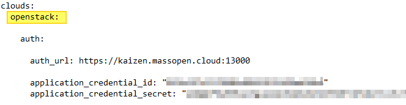
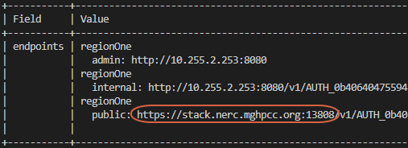

Steps to Migrate Volumes from MOC to NERC
Create a spreadsheet to track the values you will need
-
The values you will want to keep track of are.
Label Value MOCAccess MOCSecret NERCAccess NERCSecret MOCEndPoint https://kzn-swift.massopen.cloudNERCEndPoint https://stack.nerc.mghpcc.org:13808MinIOVolume MOCVolumeBackupID ContainerName NERCVolumeBackupID NERCVolumeName -
It is also helpful to have a text editor open so that you can insert the values from the spreadsheet into the commands that need to be run.
Create a New MOC Mirror to NERC Instance
-
Follow the instructions here to set up your instance.

-
When selecting the Image please select moc-nerc-migration (highlighted in yellow above).
-
Once the Instance is Running move onto the next step
-
-
Name your new instance something you will remember,
MirrorMOC2NERCfor example. -
Assign a Floating IP to your new instance. If you need assistance please review the Floating IP steps here.
- Your floating IPs will not be the same as the ones you had in the MOC. Please claim new floating IPs to use.
-
SSH into the MirrorMOC2NERC Instance. The user to use for login is
centos. If you have any trouble please review the SSH steps here.
Setup Application Credentials
Gather MOC Application Credentials
-
Follow the instructions here to create your Application Credentials.
- Make sure to save the
clouds.yamlasclouds_MOC.yaml.
- Make sure to save the
Gathering NERC Application Credentials
-
Follow the instructions under the header Command Line setup here to create your Application Credentials.
- Make sure to save the
clouds.yamlasclouds_NERC.yaml.
- Make sure to save the
Combine the two clouds.yaml files
-
Make a copy of
clouds_MOC.yamland save asclouds.yaml -
Open
clouds.yamlin a text editor of your choice.
- Change the
openstack(highlighted in yellow above) value tomoc(highlighted in yellow two images below).
- Change the
-
Open
clouds_NERC.yamlin a text editor of your choice.
-
Change the
openstack(highlighted in yellow above) value tonerc(highlighted in green below). -
Highlight and copy everything from nerc to the end of the line that starts with auth_type

- Paste the copied text into
clouds.yamlbelow the line that starts with auth_type. Your newclouds.yamlwill look similar to the image above.
-
-
For further instructions on
clouds.yamlfiles go Here.
Moving Application Credentials to VM
-
SSH into the VM created at the top of this page for example
MirrorMOC2NERC. -
Create the openstack config folder and empty
clouds.yamlfile.mkdir -p ~/.config/openstack cd ~/.config/openstack touch clouds.yaml -
Open the
clouds.yamlfile in your favorite text editor. (vi is preinstalled). -
Copy the entire text inside the
clouds.yamlfile on your local computer. -
Paste the contents of the local
clouds.yamlfile into theclouds.yamlon the VM. -
Save and exit your VM text editor.
Confirm the Instances are Shut Down
-
Confirm the instances are Shut Down. This is a very important step because we will be using the force modifier when we make our backup. The volume can become corrupted if the Instance is not in a Shut Down state.
-
Log into the Instance page of the MOC Dashboard
-
Check the Power State of all of the instances you plan to migrate volumes from are set to Shut Down (highlighted in yellow in image above).
-
If they are not please do so from the Actions Column.
-
Click the drop down arrow under actions.
-
Select Shut Off Instance (blue arrow pointing to it in image above).
-
-
Backup and Move Volume Data from MOC to NERC
- SSH into the VM created at the top of this page. For steps on how to do this please see instructions here.
Create EC2 credentials in MOC & NERC
-
Generate credentials for Kaizen with the command below.
openstack --os-cloud moc ec2 credentials create
- Copy the
access(circled in red above) andsecret(circled in blue above) values into your table as<MOCAccess>and<MOCSecret>.
- Copy the
-
Generate credentials for the NERC with the command below.
openstack --os-cloud nerc ec2 credentials create
- Copy the
access(circled in red above) andsecret(circled in blue above) values into your table as as<NERCAccess>and<NERCSecret>.
- Copy the
Find Object Store Endpoints
-
Look up information on the
object-storeservice in MOC with the command below.openstack --os-cloud moc catalog show object-store -c endpoints
- If the value is different than
https://kzn-swift.massopen.cloudcopy the base URL for this service (circled in red above).
- If the value is different than
-
Look up information on the
object-storeservice in NERC with the command below.openstack --os-cloud nerc catalog show object-store -c endpoints
- If the value is different than
https://stack.nerc.mghpcc.org:13808copy the base URL for this service (circled in red above).
- If the value is different than
Configure minio client aliases
-
Create a MinIO alias for MOC using the base URL of the "public" interface of the object-store service
<MOCEndPoint>and the EC2 access key (ex.<MOCAccess>) & secret key (ex.<MOCSecret>) from your table.$ mc alias set moc https://kzn-swift.massopen.cloud <MOCAccess> <MOCSecret> mc: Configuration written to `/home/centos/.mc/config.json`. Please update your access credentials. mc: Successfully created `/home/centos/.mc/share`. mc: Initialized share uploads `/home/centos/.mc/share/uploads.json` file. mc: Initialized share downloads `/home/centos/.mc/share/downloads.json` file. Added `moc` successfully. -
Create a MinIO alias for NERC using the base URL of the "public" interface of the object-store service
<NERCEndPoint>and the EC2 access key (ex.<NERCAccess>) & secret key (ex.<NERCSecret>) from your table.$ mc alias set nerc https://stack.nerc.mghpcc.org:13808 <NERCAccess> <NERCSecret> Added `nerc` successfully.
Backup MOC Volumes
-
Locate the desired Volume UUID from the table you created in Step 2 Gathering MOC Information.
-
Add the first Volume ID from your table to the code below in the
<MOCVolumeID>field and create a Container Name to replace the<ContainerName>field. Container Name should be easy to remember as well as unique so include your name. Maybe something likethomasa-backups.$ openstack --os-cloud moc volume backup create --force --container <ContainerName> <MOCVolumeID> +-------+---------------------+ | Field | Value | +-------+---------------------+ | id | <MOCVolumeBackupID> | | name | None |- Copy down your
<MOCVolumeBackupID>to your table.
- Copy down your
-
Wait for the backup to become available. You can run the command below to check on the status. If your volume is 25 or larger this might be a good time to go get a warm beverage or lunch.
$ openstack --os-cloud moc volume backup list +---------------------+------+-------------+-----------+------+ | ID | Name | Description | Status | Size | +---------------------+------+-------------+-----------+------+ | <MOCVolumeBackupID> | None | None | creating | 10 | ... $ openstack --os-cloud moc volume backup list +---------------------+------+-------------+-----------+------+ | ID | Name | Description | Status | Size | +---------------------+------+-------------+-----------+------+ | <MOCVolumeBackupID> | None | None | available | 10 |
Gather MinIO Volume data
- Get the volume information for future commands. Use the same
<ContainerName>from when you created the volume backup. It is worth noting that this value shares the ID number with the VolumeID.$ mc ls moc/<ContainerName> [2022-04-29 09:35:16 EDT] 0B <MinIOVolume>/
Create a Container on NERC
- Create the NERC container that we will send the volume to. Use
the same
<ContainerName>from when you created the volume backup.$ mc mb nerc/<ContainerName> Bucket created successfully `nerc/<ContainerName>`.
Mirror the Volume from MOC to NERC
- Using the volume label from MinIO
<MinIOVolume>and the<ContainerName>for the command below you will kick off the move of your volume. This takes around 30 sec per GB of data in your volume.$ mc mirror moc/<ContainerName>/<MinIOVolume> nerc/<ContainerName>/<MinIOVolume> ...123a30e_sha256file: 2.61GB / 2.61GB [=========...=========] 42.15Mib/s 1m3s
Copy the Backup Record from MOC to NERC
-
Now that we've copied the backup data into the NERC environment, we need to register the backup with the NERC backup service. We do this by copying metadata from MOC. You will need the original
<MOCVolumeBackupID>you used to create the original Backup.openstack --os-cloud moc volume backup record export -f value <MOCVolumeBackupID> > record.txt -
Next we will import the record into NERC.
$ openstack --os-cloud nerc volume backup record import -f value $(cat record.txt) <NERCVolumeBackupID> None- Copy
<NERCVolumeBackupID>value into your table.
- Copy
Create an Empty Volume on NERC to Receive the Backup
- Create a volume in the NERC environment to receive the backup. This must be
the same size or larger than the original volume which can be changed by
modifying the
<size>field. Remove the "--bootable" flag if you are not creating a bootable volume. The<NERCVolumeName>field can be any name you want, I would suggest something that will help you keep track of what instance you want to attach it to. Make sure to fill in the table you created in Step 2 with the<NERCVolumeName>value in theNERC Volume Namecolumn.$ openstack --os-cloud nerc volume create --bootable --size <size> <NERCVolumeName> +---------------------+----------------+ | Field | Value | +---------------------+----------------+ | attachments | [] | | availability_zone | nova | ... | id | <NERCVolumeID> | ... | size | <size> | +---------------------+----------------+
Restore the Backup
-
Restore the Backup to the Volume you just created.
openstack --os-cloud nerc volume backup restore <NERCVolumeBackupID> <NERCVolumeName> -
Wait for the volume to shift from
restoring-backuptoavailable.$ openstack --os-cloud nerc volume list +----------------+------------+------------------+------+-------------+ | ID | Name | Status | Size | Attached to | +----------------+------------+------------------+------+-------------+ | <NERCVolumeID> | MOC Volume | restoring-backup | 3 | Migration | $ openstack --os-cloud nerc volume list +----------------+------------+-----------+------+-------------+ | ID | Name | Status | Size | Attached to | +----------------+------------+-----------+------+-------------+ | <NERCVolumeID> | MOC Volume | available | 3 | Migration | -
Repeat these Backup and Move Volume Data steps for each volume you need to migrate.
Create NERC Instances Using MOC Volumes
-
If you have volumes that need to be attached to an instance please follow the next steps.
-
Follow the instructions here to set up your instance/s.
-
Instead of using an Image for your Boot Source you will use a Volume (orange arrow in image below).

- Select the
<NERCVolumeName>you created in step Create an Empty Volume on NERC to Recieve the Backup
- Select the
-
The Flavor will be important as this decides how much vCPUs, RAM, and Disk this instance will consume of your total.
- If for some reason the earlier approved resource quota is not sufficient you can request further quota by following these steps.
-
-
Repeat this section for each instance you need to create.